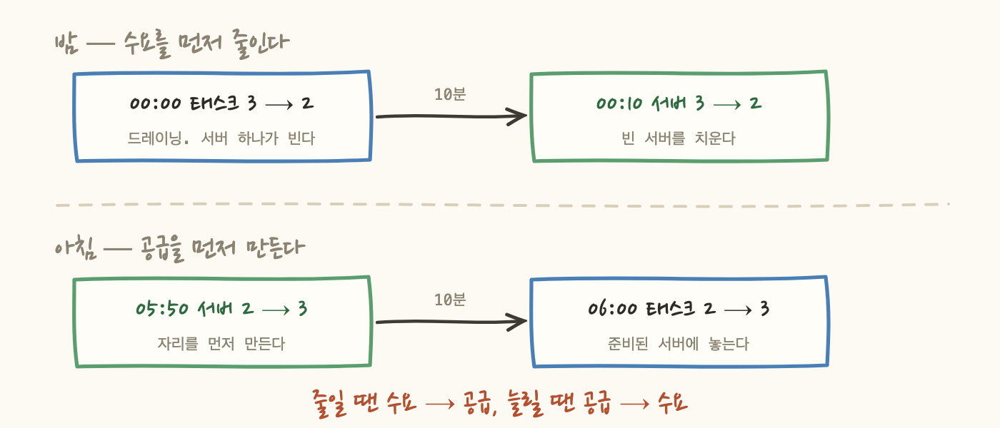
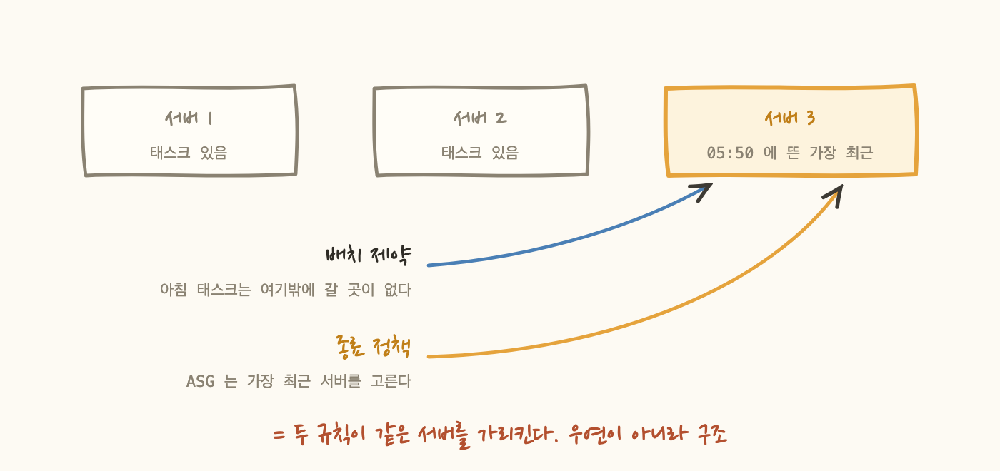
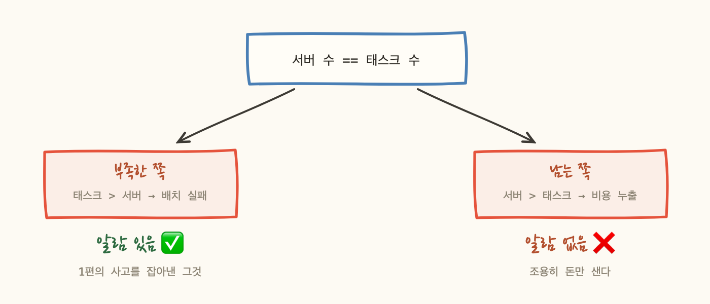

고치는 건 쉬워 보였어요. 서버 쪽에만 예약이 걸려 있었으니 태스크 쪽에도 예약을 걸면 됩니다. 자정에 2개, 아침에 3개.
실제로 조치는 세 줄로 끝났습니다. 그런데 그 세 줄 중 하나가 1편에서 본 것과 정확히 같은 모양의 새 사고를 만들 수 있는 자리에 있었어요. 이 글은 그걸 발견하고 감지 장치까지 붙인 이야기입니다.
태스크 예약과 서버 예약을 같은 시각에 걸면 안 됩니다. 순서가 있어요. 그리고 밤과 아침의 순서가 서로 반대입니다.

밤에는 태스크가 먼저 빠져야 서버를 안전하게 뺄 수 있어요. 반대로 하면 드레이닝 중에 서버가 죽습니다. 아침에는 서버가 먼저 준비돼야 태스크를 놓을 수 있고요. 반대로 하면 자리 없는 곳에 배치를 시도해서 아침에 알람이 울립니다.
여기까지 걸고 나니 남는 문제가 있었어요. 자정에 태스크가 빠져서 서버 하나가 비는데, ASG가 어느 서버를 고를지 모릅니다.
처음엔 "1/3 확률로 맞고 2/3 확률로 틀리겠네"라고 썼어요. 다시 보니 확률 문제가 아니었습니다.
둘은 서로 다른 기준으로 고릅니다.
그리고 가장 최근에 뜬 서버는 항상 그날 아침에 추가된 3번째 서버입니다. 게다가 1편에서 본 그 배치 제약 때문에, 아침에 추가된 태스크는 반드시 그 서버에 올라가요 — 나머지 두 대는 이미 태스크가 있으니 다른 선택지가 없습니다.

즉 ASG가 고를 서버에는 거의 항상 태스크가 있습니다. ECS가 하필 그 서버의 태스크를 골랐을 때만 우연히 맞아떨어지는 거예요. 매일 밤 불필요한 태스크 재시작이 한 번 일어나고, 그 사이 몇 분간 태스크가 하나 부족해집니다.
그래서 세 번째 조치가 종료 보호입니다. 태스크가 있는 서버를 ASG의 후보 목록에서 빼버리면, 종료 정책이 무엇이든 남은 후보는 빈 서버 하나뿐이라 선택이 결정적이 됩니다.
여기서 문제를 발견했어요. 종료 보호에는 전제 조건이 있는데, 이 서비스가 그 조건을 만족하는지 확실하지 않습니다.
더 중요한 건 실패했을 때 중립이 아니라는 겁니다.
인스턴스 축소 보호는 ECS 기능이 아니라 ASG 자체 기능이에요. 우리는 조치할 때 서버 3대에 보호를 손으로 걸었습니다. ECS가 그 플래그를 관리하지 않으면, 걸어둔 값이 영원히 그대로 남습니다.
세 번째 조치가 무력하면 두 번째까지 망가집니다. 안 켠 상태보다 나쁜 구성이고, 그 상태를 우리가 만든 거예요. 비용을 지키려고 한 작업이 비용을 전부 날리는 방향으로 실패할 수 있었습니다.
이 대목에서 등이 서늘했어요. 1편의 사고를 잡아낸 그 알람은 배치 실패를 감지합니다. 그런데 지금 상황은 자리가 없는 게 아니라 자리가 남는 거예요.
배치 실패가 아니니 알람은 울리지 않습니다. 그리고 저는 조치 문서에 이렇게 써뒀어요.
그러니까 1편에서 며칠간 아무도 몰랐던 사고를 고치는 작업이, 감지 장치가 없는 상태에서 같은 모양의 새 사고를 만들 수 있는 자리에 와 있었던 거예요. 방향만 반대로요.

남는 쪽을 잡는 알람은 목록에 아예 없었어요. 그래서 만들었는데, 여기서 뜻밖의 소득이 있었습니다.
태스크 수와 서버 수를 비교하려면 컨테이너 단위 지표가 필요하다고 생각해서, 유료 모니터링 기능 도입 결정을 기다리고 있었어요. 그런데 이 방향에는 그게 필요 없었습니다.
ASG의 GroupDesiredCapacity와 GroupInServiceInstances만으로 잡힙니다. ASG 안에서 목표와 실제가 어긋난 것이니, 태스크 쪽을 볼 필요조차 없었어요. 무료 그룹 지표고, 며칠 전에 이미 켜둔 것이었습니다.
부족한 쪽 알람과 짝을 이루면 등식이 양방향으로 강제됩니다. 30분 지연을 두는 이유는 정상 전환 중(종료 대기, 시작 대기)에 잠깐 어긋나기 때문이에요. 실측 전환 시간이 6분쯤이라 여유가 충분합니다.
조치는 세 개 다 적용했습니다. 설정만 바꾸는 작업이라 재시작 0회, 다운타임 0초였어요. 다만 세 개가 함께 도는 첫 밤이 오늘입니다.
그리고 오늘 밤은 하나를 더 알려줍니다. 종료 보호와 자동 조절은 같은 전제에 걸려 있어요 — ECS가 이 서비스의 태스크를 용량 공급자에 연결해서 보는가. 그래서 오늘 밤 결과가 "더 나은 구조로 갈 수 있는가"라는 질문에도 같이 답합니다. 실험 하나가 답 두 개를 주는 셈이에요.